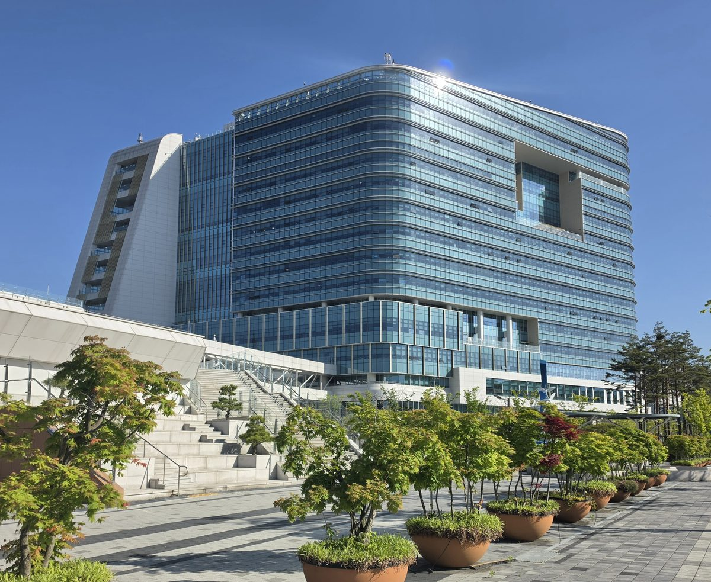

윤호중 행안부 장관 "햇빛소득마을 2030년까지 3,000개 이상"…'동(洞) 지역 제외' 지적엔 "농촌 특성 지역은 확대 검토"

국회 행정안전위원회 종합감사 답변…1·2차 공모로 523개 마을 선정, 3차 공모는 30일까지. 박정현 의원 "행정구역상 동인 농촌은 참여 못 해"
윤호중 행정안전부 장관은 26일 국회 행정안전위원회 종합 국정감사에서 주민참여형 태양광 사업인 햇빛소득마을을 2030년까지 3,000개 이상 만들고, 가능하면 그보다 더 늘리겠다는 뜻을 밝혔다. 햇빛소득마을은 주민이 태양광 발전사업에 참여해 생긴 수익을 마을 공동체와 주민에게 돌려주는 사업으로, 지금까지 1·2차 공모를 거쳐 523개 마을이 뽑혔고 3차 공모는 이달 30일까지 진행된다. 이날 박정현 더불어민주당 의원은 공모 대상이 읍·면·리로 한정돼 있어, 실제로는 농촌인데도 행정구역상 동(洞)으로 편제된 지역은 신청할 수 없다고 지적했다. 윤 장관은 이에 대해 "동 지역에서도 농촌의 특성을 가지고 있는 지역에 대해서는 대상지역을 확대하는 것을 검토하고 있다"고 답했다. 장관의 답변은 검토 단계여서, 동 지역이 실제로 공모 대상에 들어갈지와 그 기준은 행안부의 후속 결정에 달려 있다.
시민에너지 관점
햇빛소득마을을 3,000곳 넘게 늘리려면 대상을 읍·면 밖으로 넓히는 일은 피하기 어렵고, 그 기준은 행정구역 이름이 아니라 주민이 함께 쓸 수 있는 지붕과 부지여야 한다. 독일은 2017년 세입자 전기(Mieterstrom) 제도를 도입해, 도시 공동주택 지붕에서 만든 태양광 전기를 같은 건물 세입자에게 공급하는 사업을 지원해 왔다. 도시에는 태양광을 놓을 땅이 없다는 반론이 나올 수 있지만, 공공건물과 공영주차장, 아파트 지붕처럼 주민이 함께 소유하고 운영할 수 있는 공간은 오히려 도시에 많다. 행안부는 농촌 특성이 있는 동부터 문을 열되, 도시 동 주민도 공동 출자로 참여할 수 있는 기준까지 이번 검토에 담아야 한다.
출처: 파이낸셜뉴스 2026-10-26 이보미 원문 보기
ユン・ホジュン行政安全部長官「太陽光所得村、2030年までに3,000カ所以上」…「洞地域の除外」の指摘には「農村の特性がある地域は拡大を検討」
国会行政安全委員会の総合監査での答弁…第1・2次公募で523の村を選定、第3次公募は30日まで。パク・ジョンヒョン議員「行政区域上の洞にある農村は参加できない」
ユン・ホジュン行政安全部長官は26日、国会行政安全委員会の総合国政監査で、住民参加型の太陽光事業である太陽光所得村を2030年までに3,000カ所以上つくり、可能ならさらに増やす考えを示した。太陽光所得村は、住民が太陽光発電事業に参加して得た収益を村の共同体と住民に還元する事業で、これまでに第1・2次公募を通じて523の村が選ばれ、第3次公募は今月30日まで行われる。この日、共に民主党のパク・ジョンヒョン国会議員は、公募の対象が邑・面・里に限られているため、実際には農村でありながら行政区域上は洞に編入されている地域は申請できないと指摘した。ユン長官はこれに対し「洞地域でも農村の特性を持つ地域については、対象地域を拡大することを検討している」と答えた。長官の答弁は検討段階であり、洞地域が実際に公募の対象に加わるかどうかとその基準は、行政安全部の今後の決定にかかっている。
市民エネルギーの視点
太陽光所得村を3,000カ所以上に増やすには、対象を邑・面の外へ広げることは避けにくく、その基準は行政区域の名前ではなく、住民が共同で使える屋根や用地であるべきだ。ドイツは2017年にテナント電力（Mieterstrom）制度を導入し、都市の集合住宅の屋根でつくった太陽光の電気を同じ建物の入居者に供給する事業を支援してきた。都市には太陽光を置く土地がないという反論も出るだろうが、公共建築物や公営駐車場、マンションの屋根のように、住民が共同で所有し運営できる空間はむしろ都市に多い。行政安全部は農村の特性がある洞から門を開きつつ、都市の洞の住民も共同出資で参加できる基準まで、今回の検討に盛り込むべきだ。
出典: ファイナンシャルニュース（Financial News） 2026-10-26 イ・ボミ 原文を読む
韩国行政安全部部长尹昊重："到2030年建成3,000个以上阳光收入村"…针对"洞地区被排除"的指摘回应"正研究扩大至具有农村特点的地区"
国会行政安全委员会综合国政监察上的答复…第一、二轮评选共选出523个村庄，第三轮申报截至30日。议员Park Jung-hyun称"行政区划上属于洞的农村无法参与"
韩国行政安全部部长尹昊重26日在国会行政安全委员会综合国政监察中表示，将在2030年前建成3,000个以上居民参与型光伏项目"阳光收入村"，可能的话还会更多。阳光收入村是居民参与光伏发电项目、并把所得收益返还给村庄共同体和居民的项目；截至目前，经过第一、二轮评选共选出523个村庄，第三轮申报将持续到本月30日。当天，共同民主党议员Park Jung-hyun指出，由于申报对象限定为邑、面、里，实际上是农村但在行政区划上被编为洞的地区无法申请。尹昊重对此回答说："对于洞地区中具有农村特点的地区，正在研究扩大申报对象地区。"部长的答复仍处于研究阶段，洞地区能否真正纳入申报对象以及具体标准，取决于行政安全部的后续决定。
市民能源视角
要把阳光收入村扩大到3,000个以上，把对象扩展到邑、面以外几乎不可避免，而标准不应是行政区划的名称，而应是居民可以共同使用的屋顶和场地。德国在2017年引入"租户电力"（Mieterstrom）制度，支持把城市集合住宅屋顶生产的光伏电力供应给同一栋楼的租户。可能有人会说城市里没有安装光伏的土地，但公共建筑、公营停车场、公寓屋顶等居民可以共同拥有和运营的空间，在城市里反而更多。行政安全部应先向具有农村特点的洞开放，同时把城市洞地区居民也能以共同出资方式参与的标准纳入这次研究。
来源: Financial News 2026-10-26 Lee Bo-mi 查看原文
Interior Minister Yun Ho-jung: "3,000 or more Sunlight Income Villages by 2030"; on exclusion of urban 'dong' districts, "reviewing expansion to areas with rural character"
Answer at the National Assembly Public Administration and Security Committee's comprehensive audit; 523 villages chosen in the first two rounds, third round open until the 30th; lawmaker Park Jung-hyun says rural areas classed as 'dong' cannot take part
Minister of the Interior and Safety Yun Ho-jung said at the National Assembly Public Administration and Security Committee's comprehensive audit on the 26th that the government intends to create 3,000 or more Sunlight Income Villages, its resident-participation solar programme, by 2030, and more if possible. Sunlight Income Villages are projects in which residents take part in solar power generation and the income is returned to the village community and its residents; 523 villages have been selected so far through the first and second rounds, and the third round of applications runs until the 30th of this month. At the session, Democratic Party lawmaker Park Jung-hyun pointed out that because eligibility is limited to eup, myeon and ri (towns, townships and villages), areas that are rural in practice but administratively classed as dong (urban neighbourhoods) cannot apply. Yun replied that "for dong areas that have rural characteristics, we are reviewing expanding the eligible areas". The minister's answer refers to a review, so whether dong areas will actually become eligible, and on what criteria, depends on the ministry's later decision.
Citizen Energy View
Growing Sunlight Income Villages beyond 3,000 will be hard without opening the programme beyond eup and myeon, and the test should be the roofs and sites residents can share rather than the name of an administrative district. Germany introduced its tenant electricity (Mieterstrom) scheme in 2017 to support projects that supply solar power generated on the roofs of urban apartment buildings to the tenants of the same building. Some will object that cities have no land for solar, but spaces residents can jointly own and run, such as public buildings, public car parks and apartment roofs, are if anything more plentiful in cities. The ministry should start with dong areas of rural character, but this review should also set criteria under which residents of urban dong areas can take part through joint investment.
Source: Financial News 2026-10-26 Lee Bo-mi Read the original